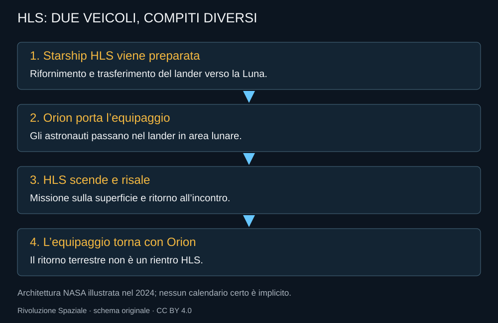

Il programma Human Landing System porta Starship dentro un compito preciso: trasportare astronauti dall’orbita lunare alla superficie e riportarli verso il veicolo che li riporterà sulla Terra. Non è la stessa missione di una nave che decolla da Starbase e torna direttamente con persone a bordo.
La scelta del 2021
Il 16 aprile 2021 NASA seleziona SpaceX per lo sviluppo e la dimostrazione del lander del programma Artemis. Il contratto iniziale vale circa 2,89 miliardi di dollari. È una scelta di sviluppo, con requisiti e prove da completare, non un acquisto di allunaggi già disponibili.
La decisione rende molto concreta l’ambizione di Starship. Una parte del progetto non viene più valutata soltanto attraverso obiettivi interni di SpaceX: deve rispondere a una missione NASA, con interfacce, verifiche e condizioni di sicurezza. Il successo del lanciatore e quello del lander diventano dipendenze di una campagna più ampia.
Una nave diversa
La variante lunare non ha lo stesso compito della Ship che rientra nell’atmosfera terrestre. Deve sostenere permanenza nello spazio, trasferimento degli astronauti, discesa, attività sulla superficie e risalita. La protezione termica e le superfici aerodinamiche della versione terrestre non risolvono questi problemi.
Ambienti abitabili, risorse, comunicazioni e modalità di accesso alla superficie devono essere progettati per persone che indossano equipaggiamenti e lavorano in un contesto difficile. Un volume grande offre possibilità, ma richiede controllo termico, supporto vitale e procedure. La capacità di trasportare massa non sostituisce l’abitabilità.

La catena prima dell’allunaggio
L’architettura illustrata da NASA prevede che il lander sia preparato nello spazio e raggiunga l’area lunare. Gli astronauti arrivano con Orion e passano nel lander. Dopo il lavoro sulla superficie, risalgono e tornano al veicolo previsto per il viaggio terrestre. Il lander non viene quindi qualificato semplicemente ripetendo un volo Ship sopra il Texas.
Il rifornimento rende possibile una nave molto grande, ma aggiunge dipendenze. Lanci cisterna, conservazione dei propellenti e disponibilità del lander devono convergere con la missione dell’equipaggio. Una campagna umana richiede margini e alternative più esigenti di quelli di un prototipo senza persone.
La dimostrazione senza equipaggio
Prima della missione umana, l’architettura NASA include una dimostrazione non abitata dell’allunaggio. Una prova di questo genere consente di verificare operazioni specifiche del lander. Non rende superflue le qualifiche degli apparati destinati agli astronauti: serve dentro un percorso più ampio di accettazione.
Il terreno lunare pone problemi propri. Lo scarico dei motori può muovere materiale; la geometria del sito e l’illuminazione influenzano guida e operazioni. Non c’è l’atmosfera terrestre per sostenere la discesa aerodinamica della Ship. Le prestazioni del veicolo devono essere lette dentro questo ambiente.
Un obiettivo pubblico e una verifica tecnica
Artemis dà a Starship un ruolo storico potenziale: riportare esseri umani sulla Luna con un lander di una scala molto diversa dai precedenti. Il racconto deve conservare questa portata senza anticipare il risultato. Un contratto non è un allunaggio; un veicolo visto sulla rampa non è un sistema umano qualificato.
Questo capitolo descrive le dipendenze del progetto, non assegna una data certa alla missione. Calendario e scelte operative sono approfonditi nella monografia Artemis. Nella revisione NASA del 2026, Artemis III è una dimostrazione in orbita terrestre prevista per il 2027; l’allunaggio è obiettivo di Artemis IV nel 2028. Sono traguardi di programma subordinati alla prontezza dei sistemi, non date garantite. Qui conta capire perché il rifornimento, la regolarità dei lanci e la maturazione della nave siano parti della stessa promessa lunare.
Fonti pubbliche e tracce
- NASA, selezione SpaceX HLS del 16 aprile 2021. Contratto di sviluppo e dimostrazione, non allunaggio già effettuato.
- NASA, illustrazioni della missione Starship HLS. Architettura illustrata nel 2024; immagini con eventuali crediti SpaceX non automaticamente libere.
- NASA NTRS, In-Space Cryogenic Propellant Management. Riepilogo tecnico del test 2024 e dei problemi criogenici.
- NASA, nuova architettura Artemis, 27 febbraio 2026. Artemis III: dimostrazione in orbita terrestre nel 2027; obiettivo Artemis IV nel 2028. Calendario annunciato, subordinato alla prontezza dei sistemi.
Consultare l’atlante tecnico
Caratteristiche, schemi, configurazioni e limiti: Starship HLS.